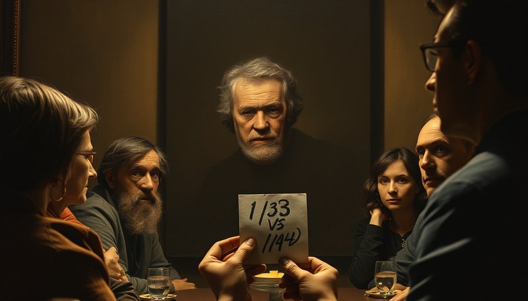

1980年代的美国快餐业，是一场贴身肉搏。麦当劳、汉堡王、温蒂、哈迪斯，各家都在菜单上互相盯防。麦当劳手里有一张王牌：四分之一磅汉堡。这款汉堡的发明人叫阿尔·伯纳丁，麦当劳在加州弗里蒙特的加盟商。1971年，他注意到顾客想要更大的汉堡，自己搞出了配方：四分之一磅牛肉饼，芝麻面包，洋葱，酸黄瓜。麦当劳总部起初犹豫，但1973年全美上市后，销量迅速冲顶。到80年代，Quarter Pounder已经是招牌产品，名字本身就是广告——四分之一磅牛肉，听起来扎实、划算，不需要解释。
就在这个节骨眼上，一个外行人闯了进来。阿尔弗雷德·陶布曼，购物中心大亨，美国现代购物中心业态的缔造者之一。他盖了几十座商场，深谙消费者如何做选择：动线怎么设计、橱窗怎么摆、美食广场里什么味道能留住人。他对产品有一种近乎偏执的讲究。在回忆录《Threshold Resistance》里，他提过一桩旧事：为了给旗下美食广场找到最好的热狗，他专程飞到布达佩斯，寻访一位香肠大师。他建造的购物中心以敞亮的中庭和精心挑选的租户组合著称，在业内被视为零售体验的先驱。
1982年，陶布曼花约400万美元从United Brands手里买下A&W。这家以根汁汽水和热狗起家的老牌连锁，当时正从两千家店的规模萎缩，菜单陈旧，品牌老化。陶布曼看中的是它的门店网络和转型空间。他立刻用新鲜牛肉替代冷冻肉饼，打出“Great Food”概念。他要让A&W在快餐红海里切出一块重视质量的客群。
但麦当劳的四分之一磅就挡在正前方。陶布曼盯着这个对手，想出了一条看似必胜的路径。他决定做一个更大、更好、同价的汉堡，直接对标。三分之一磅，比四分之一磅多33%的肉。内部盲测显示，消费者更喜欢A&W新鲜牛肉的口味。陶布曼后来在回忆录里写道，他当时以为只要价值够明显，顾客自然会选择。三分之一磅汉堡，多33%的肉，同价，他以为这个阈值早就被跨过了。
产品研发完成后，陶布曼押上了重注。他给这款汉堡定了和麦当劳四分之一磅一样的价格，多出的肉相当于白送。广告战役全面铺开，电视和电台轮番播放，口号简单有力：“Third is the Word”。据称1985年，这场对标营销正式打响。电视广告在晚餐时段密集投放，电台广告覆盖了通勤高峰。A&W的门店挂出新海报，员工换上推广制服，管理层等着销量报表上的数字往上跳。
报表来了。数字不对。不是不够好，是惨淡。投入的资源与回报完全不成比例，陶布曼在回忆录里形容，那感觉像一拳打空。门店里，顾客照旧点热狗和根汁汽水，三分之一磅汉堡的备料常常剩到报废。
陶布曼首先怀疑执行层面。他派人暗访门店，确认出品和推荐都到位。反馈正常。广告到达率也符合计划。供应链没出问题。排除了常规变量后，他不得不面对一个他不愿意承认的可能：问题出在顾客怎么看待这款产品。
他请来扬科洛维奇（Yankelovich, Skelly and White），当时最知名的市场研究机构之一。他告诉团队：查清楚，顾客到底为什么不买。

扬科洛维奇的研究人员组织了一系列焦点小组。他们把消费者请进房间，主持人把问题摊开：你们试过A&W的三分之一磅汉堡吗？为什么不买？
陶布曼在回忆录里详细记下了那一刻。第一个回答就让他愣住。消费者反问：为什么你们的三分之一磅汉堡和麦当劳的四分之一磅一个价？你们在宰我。
主持人试着解释：三分之一磅比四分之一磅多，所以同价其实是你们划算。但参与者不信。超过一半的人坚持认为三分之一磅更少。理由简单到反智：三比四小。陶布曼写下原话：“毕竟，三小于四！”
这群参与者并非算不出分数。但在收银台前，他们调用了一种日常直觉：数字越大，东西越多。这个直觉在分子上成立，在分母上失灵。而A&W的整个营销，恰恰建立在“顾客会正确理解分数”的假设上。信息的意义不在发送方手里，在接收方的认知框架里。陶布曼后来才明白这一点，但代价已经付了。
在焦点小组之前，A&W自己做过盲测，顾客确实更喜欢他们新鲜牛肉的口味。陶布曼本以为这足以说服市场。但焦点小组的结果显示，口味优势在价格质疑面前毫无还手之力。消费者甚至没有进入“好不好吃”的判断环节，直接在“划不划算”的直觉上就把A&W淘汰了。
后来的认知心理学研究证实，这种“分母忽略”是普遍的人类直觉。人们在比较分数时，会不自觉地只扫一眼分子，分母越大反而显得整体越小。从食谱到折扣计算，同样的误判屡屡发生。在后续的心理学实验中，当被问及1/3和1/4哪个大时，不少受试者会犹豫或答错，而比较1/2和1/3时正确率明显更高。分母越接近，直觉越容易翻车。陶布曼撞上的，是一个深嵌在人类认知里的坑。
焦点小组的结论像一盆冷水。陶布曼在回忆录里承认，那一刻他意识到问题不在产品，不在广告。它藏在一个他从未想过的角落：顾客的认知习惯。他后来写道，自己一生都在和顾客的犹豫打交道，但这次犹豫的根源完全出乎意料。
调查结果出来后，陶布曼做了一系列调整。他把三分之一磅汉堡改名为“Papa Burger”，绕开数字，希望用品牌感重新建立认知。但销量未见起色。Papa Burger本质上还是那款汉堡，只是换了一个名字。消费者已经形成了A&W“贵”的印象，改名没能扭转这种认知。
后来他又试过半磅双肉饼汉堡，只比四分之一磅贵10美分，照样不热卖。他写道：“顾客永远是对的，即使他这辈子没学会分数。”
这场失败并没有拖垮A&W。公司至今仍在运营，但那条产品线彻底退场。陶布曼把教训带进了另一个领域：他开始更关注K-12基础教育，觉得如果成年人连分数都凭直觉误判，问题出在更早的教育环节。当然，他的人生后来还有更大的波澜——因操纵拍卖行价格入狱，但那已是另一段故事。
在营销史上，A&W三分之一磅汉堡成了经典失败案例。商学院讲消费者认知偏差时，常把这个故事拿出来。需要说明的是，这个故事主要来自陶布曼本人的回忆录，是流传最广的版本。有评论者指出，A&W当时门店数量萎缩、品牌认知度弱于麦当劳等因素也可能影响了销量。但焦点小组的发现确实指向了一个真实的认知偏差，后来类似实验在其他产品上也复现过。
陶布曼在回忆录里反复强调一个教训：信息的意义不在发送方手里，在接收方的认知框架里。发送方觉得清楚无误，接收方可能完全读成另一回事。他后来在回忆录中用大量篇幅复盘这次失败，可见这次教训的分量。
但故事没有停在1980年代。
2021年10月，A&W突然把旧伤疤揭开了。他们推出了一款限时话题汉堡，名字叫“3/9磅”。宣传片里，吉祥物Rooty是一只戴着眼镜的熊，它对着镜头算数：3/9磅，就是三分之一磅，但既然大家觉得9比4大，那就叫3/9磅好了。
这是同一道数学题，换了一个包装。四十年前杀死三分之一磅的逻辑，大数字等于好东西，被A&W自己拿来收割流量。广告公司Cornett策划了这场自嘲营销，官方新闻稿称短片引发病毒式传播。短片在TikTok、Twitter和YouTube同步上线，几天内成为热门话题。门店同步推出配套海报，上面印着夸张的分数对比图，故意把3/9写得比1/4大一圈。A&W营销团队表示，这次营销意在用幽默方式重新讲述品牌故事，把一段失败史变成品牌资产。
社交媒体上，有人笑A&W记了四十年的仇，有人觉得这是在嘲讽顾客。一些数学教育账号也参与讨论，把这次营销当成讲解分数的活教材。争议本身又推了一波流量。这款汉堡作为限时产品，几周后下架，但A&W官方称，品牌在年轻群体中的提及率显著上升。
陶布曼已于2015年去世，没能看到这场复活。他当年在回忆录里写下的那句“毕竟，三小于四”，从一句无奈的吐槽，变成了四十年后广告里的梗。
同一个数字直觉，先让一个更好的汉堡无声退场，又让一个同样的汉堡变成话题。信息还是那条信息，接收方换了语境，结果就彻底不同。
余波
关于这场失败的具体年份，陶布曼回忆录只提“1980年代”，部分二手来源称1985年，但未获官方确认。2021年“3/9磅”营销的效果数据仅有A&W官方自述，独立评估尚未公开。
小汪老师的成长观察笔记